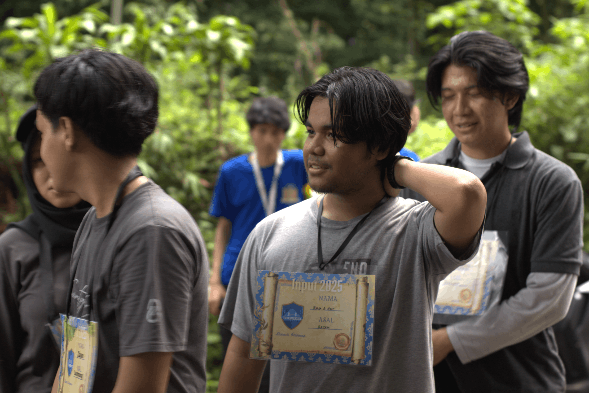
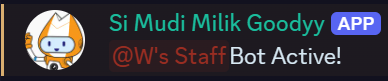
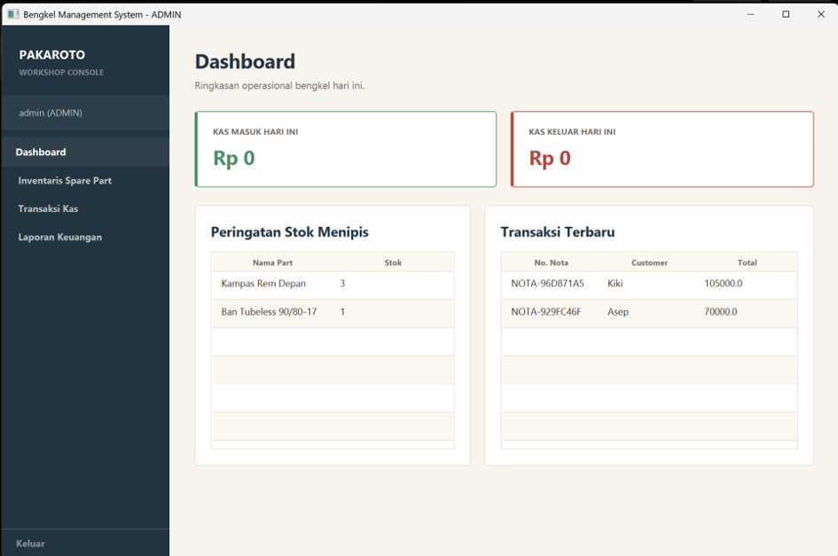

Tentang saya

Saya mahasiswa Program Studi Informatika Universitas Islam Indonesia. Saya tertarik pada berbagai macam bidang IT seperti Web Development, Cyber Security, dan Data Science. Saya berharap dapat mengembangkan keterampilan dan pengetahuan dalam bidang-bidang tersebut.
| Kegiatan | Peran | Waktu |
|---|---|---|
| Praktikum PABW | Peserta | |
| Kelas Terbuka Kampus | Peserta | |
| Organisasi kemahasiswaan | Anggota |
Karya saya
- 1. Halaman Kelas Terbuka Kampus — praktikum P03, HTML semantik dan form.
- 2. Announcement Bot Discord — pengambilan data dari website kampus dengan Discord API menggunakan web scraping.
- 3. Aplikasi Manajemen Bengkel — aplikasi sederhana untuk mengelola data bengkel.
Hubungi saya
Isi formulir berikut. Semua kolom bertanda wajib harus diisi.
Galeri Proyek
-

Antarmuka pesan dari Discord Announcement Bot. -

Dasbor manajemen transaksi aplikasi bengkel.
Pertanyaan Umum
Apa fokus teknologi yang sedang Anda tekuni saat ini?
Saat ini saya sedang mendalami pengembangan antarmuka web modern, dan keamanan sistem cyber.
Apakah terbuka untuk kolaborasi proyek?
Ya, saya sangat terbuka untuk berdiskusi maupun berkolaborasi pada proyek web atau bot otomatisasi.
Prinsip dan Quote
"Just do it! Dont Think!"